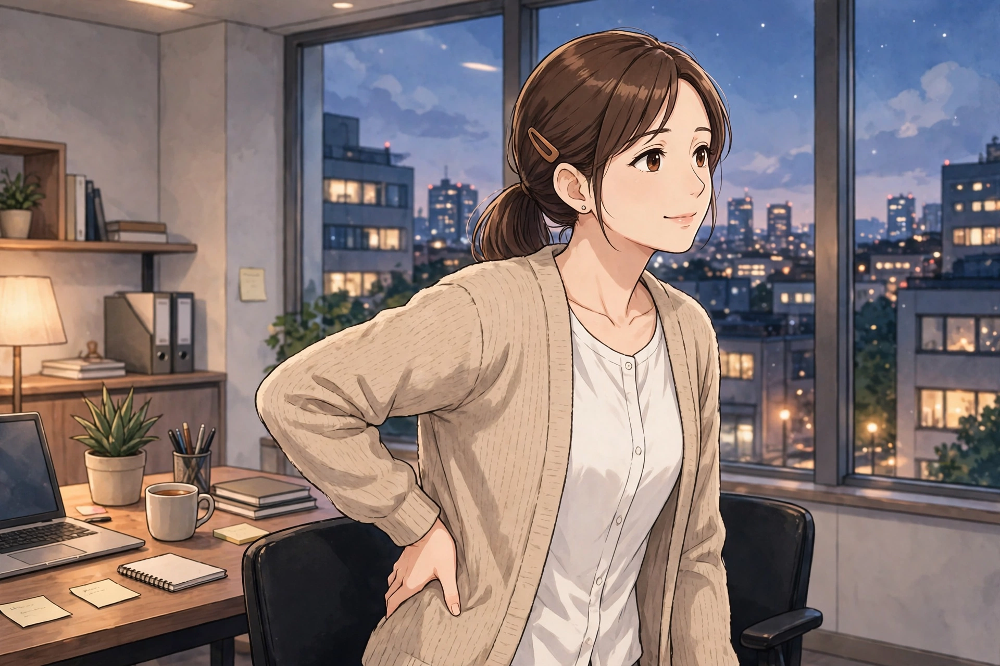
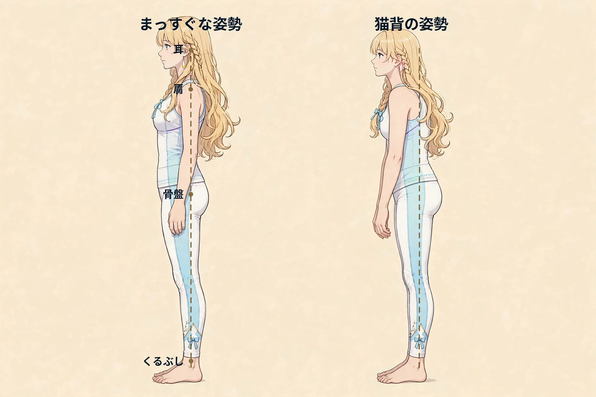

難波で腰痛に悩む方へ

座っていると腰が重くなり、立ち上がるときに思わず腰へ手が伸びる。朝の洗顔や靴下をはく動作で腰が気になる——腰の重さや痛みは、日常生活のあらゆる場面に顔を出すお悩みです。腰は上半身の重さを支える要の場所で、座り姿勢・立ち姿勢のどちらのクセも負担として集まります。このページでは、腰に負担が集まる仕組みと、腰まわりが軽く感じられる状態を目指す当サロンでのケア、ご自宅でできるセルフケアをご案内します。
こんなお悩みありませんか
- 座っていると腰が重くなり、立ち上がるときに腰へ手が伸びる
- 朝、顔を洗う前かがみの姿勢で腰が気になる
- 立ち仕事のあと、腰から背中にかけて張っている
- 同じ姿勢でいると腰が固まる感じがする
- 腰の重さが、お尻や太ももの裏まで広がることがある
- 寒い日や疲れた日は、とくに腰が重く感じる
- 腰を温めたり伸ばしたりすると少し楽になる
簡単セルフチェック（前かがみ・反らしチェック）
- 立った姿勢で、ゆっくり前かがみになり、指先がどこまで届くかと腰の引っ張り感を確認します。
- 次に両手を腰に当て、無理のない範囲で少しだけ後ろへ反らし、詰まる感じがないかを見ます。
- 前かがみと反らしのどちらかで強い張りや痛みが出る場合は、腰まわりの筋肉や関節への負担が偏っている目安と言われています。
※これは診断ではありません。ご自身の状態の傾向を知る目安としてお使いください。
腰痛の原因と仕組み

腰は上半身を支える要
腰まわりには、背骨を支える筋肉、お尻の筋肉、お腹側の筋肉が集まり、上半身の重さを分散して支えています（図1）。座り姿勢が長く続くと、腰の筋肉は同じ状態のまま働き続け、立ち上がるときに重さや固さを感じやすくなります。反対に立ちっぱなしでは、腰を反らせる筋肉に負担が集まりやすくなります。

骨盤と姿勢の関係
腰の土台は骨盤です。骨盤の傾きが前後に偏ると、腰のカーブも変わり、特定の筋肉に負担が集中しやすくなります（図2）。椅子の座り方や足を組むクセ、片側に体重をかける立ち方など、日常の小さな偏りの積み重ねが、腰の重さにつながることがあります。

冷えと巡りの影響
腰まわりは冷えの影響を受けやすい場所でもあります。筋肉は冷えると固まりやすく、血の巡りも滞りやすいと言われています。東洋医学では、腰は「腎」と関わりの深い場所とされ、冷えや疲れの蓄積を考えるときに目を向ける部位です。温める習慣とあわせて整えていくことが大切です。
セルフケアで足りる場合・サロンケアが向く場合
腰の重さが軽く、歩いたり伸ばしたりすると楽になる日が多い場合は、まずご自宅でのセルフケアを続けて様子を見る方法があります。一方で、腰の固さが抜けにくい、姿勢のクセそのものを見直したい、お尻や脚の重さまで広がっているという場合は、サロンでのケアが向いている目安になります。今の状態に合わせて選ぶことが大切です。
当サロンでのケア
当サロンの腰のケアは、「腰まわりが軽く、立ち上がりが楽に感じられる状態」を目指す組み立てです。まず姿勢と骨盤の傾きを一緒に確認し、2つの手技を組み合わせます。
美容整体：骨盤と背骨のラインを整え、腰に負担が集まりにくい姿勢の土台をつくることを目的に進めます。
オイルマッサージ：腰からお尻、背中にかけてを、経絡の流れに沿ってオイルで深くゆるめ、巡りが流れやすい状態を目指します。
ケアを通して目指すのは、こんな変化です。
- 腰まわりの重だるさがやわらぎ、立ち上がりが楽に感じる状態へ
- 骨盤の土台が整い、姿勢が安定して見える変化へ
- 背中までゆるんで、全身が軽く感じる状態へ
施術の仕上げには、その日の状態に合わせたセルフケアのポイントもお伝えします。強さは途中でも調整できますので、遠慮なくお声がけください。
施術の流れ
- 受付・カウンセリング：入室方法はご予約確定後にご案内します。気になる部位やお悩み、ご希望の強さなどをうかがいます。
- シャワー・お着替え：ご希望の方は、施術前にシャワーで汗を流して施術着にお着替えいただけます。
- 美容整体：骨盤・背骨・肩甲骨のバランスを整え、オイルが深く働きやすい土台をつくります。
- オイルマッサージ：経絡の流れに沿って全身を深くほぐします。タオルワークを丁寧に行い、露出は最小限にしています。
- シャワー・お仕上げ：施術後はシャワーでオイルを洗い流し、ゆっくりお支度いただけます。
- アフターカウンセリング：お身体の状態とセルフケアのポイントをお伝えします。無理な勧誘はいたしません。
料金・店舗情報
オイルマッサージ＋美容整体 90分 10,000円（税込）｜コースは1つだけです。有料の追加オプションの販売はありません。お支払いは現金のみです。
住所：大阪市浪速区幸町1-2-9 RE-005 502号（JR難波駅 徒歩5分）｜営業時間：月〜土 17:00〜22:00／日曜 12:00〜22:00｜女性専用・完全予約制・シャワー完備の完全個室｜当サロンでは鍼灸施術は行いません。
ご自宅でできるセルフケア
- 膝抱えストレッチ：仰向けで両膝を抱え、腰の後ろをゆっくり伸ばします。20〜30秒を2セット、呼吸を止めずに行います。
- お尻のストレッチ：椅子に座って片足を反対の膝に乗せ、上体を前に倒してお尻の奥を伸ばします。左右30秒ずつが目安です。
- こまめに立つ習慣：座り仕事では30〜60分に一度立ち上がり、軽く歩くことで腰の固まりを防ぎます。
- 腰を温める：湯船にゆっくり浸かる、腹巻きやカイロで腰まわりを冷やさない工夫も、腰の重さ対策になります。
受診の目安
腰の痛みに加えて、脚のしびれや力が入りにくい感じ、排尿・排便の異常を伴う場合や、発熱を伴う場合、転倒などのあとに始まった痛みの場合は、施術の前に医療機関への受診をおすすめします。安静にしていても痛みが強くなる場合も、まずは医療機関でご相談ください。
よくある質問
腰が痛いときでも施術を受けられますか？
痛みの状態によります。カウンセリングで状態をうかがい、無理のない範囲で進めます。強い痛みやしびれを伴う場合は、まず医療機関への受診をおすすめしています。
腰だけ集中的にケアしてもらえますか？
ご希望はうかがいますが、腰の負担は姿勢や骨盤の土台と関わるため、全身のバランスを見ながら腰を中心に組み立てる形をご提案することが多いです。
施術は痛いですか？強さは調整できますか？
強さは、ご希望をうかがいながら調整します。固まった部位を無理に押しほぐすのではなく、お身体の状態に合わせた圧で進めます。感じ方には個人差がありますので、施術中も遠慮なくお声がけください。
場所と予約方法を教えてください。
大阪市浪速区幸町1-2-9 RE-005 502号、JR難波駅から徒歩5分です。ご予約はLINE公式アカウントで受け付けています。入室方法はご予約確定後にご案内します。
初めてでも大丈夫ですか？
はい。当サロンは完全予約制・完全個室です。最初にカウンセリングでお身体の状態や姿勢のクセをうかがい、無理のない内容から始めます。施術の前後で感覚の違いを一緒に確認しながら進めますので、初めての方も安心してご利用いただけます。
施術者について
平賀 伸人（ひらが のぶひと／男性セラピスト）｜施術歴30年。鍼灸師（国家資格）・登録販売者・アロマセラピスト・パーソナルトレーナーの資格を持ち、オイルマッサージと美容整体を、その日の状態とご希望に合わせて組み合わせて施術します。このページの内容は、施術者の知識と経験をもとに作成しています。
関連するお悩み
ご予約・お問い合わせ
ご予約はLINE公式アカウントで受け付けています。ご希望の日時をお送りください。変更・キャンセルはLINEでご連絡ください。キャンセル料はいただきません。
さらに学びたい方へ：現場で使われる専門書（PR）
このページのテーマに合わせて選んだ本と、当店の施術でも参考にしている専門書です。


※本ブロックのリンクはAmazonアソシエイト・プログラムおよび楽天アフィリエイトによる広告リンクです。使用感の保証をするものではありません。